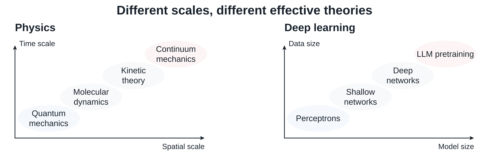
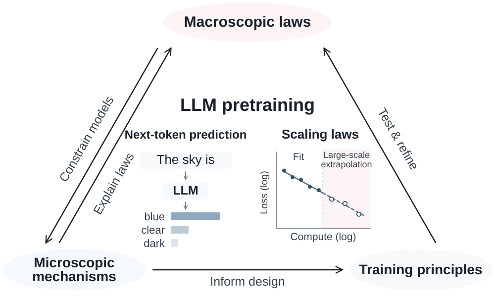

Research: Toward a predictive science of deep learningMy goal is to uncover the principles governing deep learning and use them to explain mechanisms, make quantitative predictions, and inform algorithm design. I pursue this goal through three complementary perspectives:
Inspired by physics, I view scale as an organizing principle for deep learning. I do not expect a single theory to capture learning across all scales; different scales require different effective theories.  This perspective suggests two complementary routes toward understanding deep learning:
Much of my earlier work followed the bottom-up route. I have come to see a limitation of developing theory from microscopic models alone: without constraints from macroscopic observations, it is difficult to determine which modeling choices and mechanisms are relevant to real-world training. I am now exploring the top-down route, using observed regularities to guide toy model construction and analysis, with the hope that the two approaches will eventually inform one another. Current focus: Starting from LLM pretrainingLLM pretraining minimizes the next-token prediction loss over vast text corpora: \[ \min_{\theta} \mathcal{R}(\theta),\qquad \mathcal{R}(\theta)=\mathbb{E}_{\mathbf{x}\sim\mathcal{D}} \left[-\sum_{k=2}^{L}\log P_{\theta}(x_k\mid x_1,\dots,x_{k-1})\right], \] where \(P_\theta\) is a conditional token distribution parameterized by a large Transformer, and \(\mathcal{D}\) is a distribution over sequences from internet-scale corpora. Despite its apparent complexity, pretraining exhibits simple macroscopic regularities, such as neural scaling laws. My research aims to understand how these regularities emerge and how they can guide more efficient training from three perspectives:
For an overview, see my talk slides. Selected work includes:
 Earlier workMy earlier work developed mathematical perspectives on neural-network function spaces and SGD dynamics. These studies helped shape my current approach to understanding large-scale learning.
|